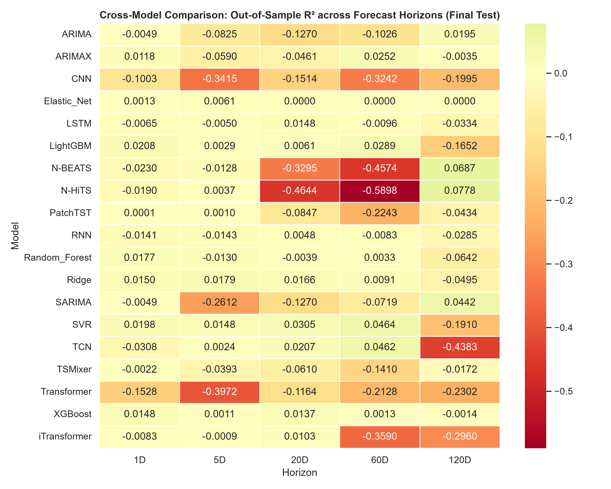

Overall Rankings OOS R2
Research Project: When Does Equity Return Predictability Decay? A Multi-Horizon and Regime-Dependent Out-of-Sample Analysis
Evaluated Models: Exactly 19 Regression Models + 1 Classification Model (Logistic Regression) + Historical Mean Benchmark
Out-of-Sample Evaluation Dataset: S&P 500 (^GSPC), Split 3 (2020-11-02 to 2026-04-07, 1,362 trading days)
The table below presents the overall ranking of all 19 regression forecasting models, averaged across all five horizons (1D to 120D) on the independent Final Test set.
| Model | Family | OOS_R2 | RMSE | MAE | DA | Excess_DA | Rank_OOS_R2 |
|---|---|---|---|---|---|---|---|
| XGBoost | Kernel & Tree-based ML | 0.0059 | 0.04646 | 0.03704 | 0.66388 | -0.00222 | 1 |
| Ridge | Linear Models | 0.00182 | 0.04678 | 0.03692 | 0.63538 | -0.03068 | 2 |
| Elastic_Net | Linear Models | 0.00148 | 0.0465 | 0.03702 | 0.65904 | -0.00706 | 3 |
| LSTM | Classic Deep Learning | -0.00794 | 0.04686 | 0.0371 | 0.64332 | -0.02276 | 4 |
| Random_Forest | Kernel & Tree-based ML | -0.01202 | 0.04712 | 0.03776 | 0.6505 | -0.01556 | 5 |
| RNN | Classic Deep Learning | -0.01208 | 0.04686 | 0.03562 | 0.63026 | -0.03582 | 6 |
| ARIMAX | Statistical Models | -0.01432 | 0.0467 | 0.03658 | 0.61468 | -0.0514 | 7 |
| SVR | Kernel & Tree-based ML | -0.0159 | 0.04772 | 0.03822 | 0.63538 | -0.03068 | 8 |
| LightGBM | Kernel & Tree-based ML | -0.0213 | 0.04774 | 0.03806 | 0.64216 | -0.02394 | 9 |
| TSMixer | Advanced Time-Series Deep Learning | -0.05214 | 0.04792 | 0.03676 | 0.5652 | -0.1009 | 10 |
| ARIMA | Statistical Models | -0.0595 | 0.04768 | 0.03614 | 0.61512 | -0.05094 | 11 |
| PatchTST | Advanced Time-Series Deep Learning | -0.07026 | 0.04866 | 0.03828 | 0.65844 | -0.00764 | 12 |
| TCN | Advanced Time-Series Deep Learning | -0.07996 | 0.04984 | 0.03854 | 0.61908 | -0.047 | 13 |
| SARIMA | Statistical Models | -0.08416 | 0.04764 | 0.03626 | 0.61262 | -0.05346 | 14 |
| iTransformer | Advanced Time-Series Deep Learning | -0.13078 | 0.05122 | 0.03962 | 0.66124 | -0.00484 | 15 |
| N-BEATS | Advanced Time-Series Deep Learning | -0.1508 | 0.04992 | 0.04108 | 0.51262 | -0.15344 | 16 |
| N-HiTS | Advanced Time-Series Deep Learning | -0.19834 | 0.05098 | 0.0417 | 0.52894 | -0.13716 | 17 |
| Transformer | Classic Deep Learning | -0.22188 | 0.0513 | 0.04104 | 0.55448 | -0.1116 | 18 |
| CNN | Advanced Time-Series Deep Learning | -0.22338 | 0.05166 | 0.04096 | 0.56828 | -0.09782 | 19 |
Multi-horizon comparative matrix evaluating predictability decay from 1D to 120D:
| Model | 1D | 5D | 20D | 60D | 120D |
|---|---|---|---|---|---|
| ARIMA | -0.0049 | -0.0825 | -0.127 | -0.1026 | 0.0195 |
| ARIMAX | 0.0118 | -0.059 | -0.0461 | 0.0252 | -0.0035 |
| CNN | -0.1003 | -0.3415 | -0.1514 | -0.3242 | -0.1995 |
| Elastic_Net | 0.0013 | 0.0061 | 0 | 0 | 0 |
| LSTM | -0.0065 | -0.005 | 0.0148 | -0.0096 | -0.0334 |
| LightGBM | 0.0208 | 0.0029 | 0.0061 | 0.0289 | -0.1652 |
| N-BEATS | -0.023 | -0.0128 | -0.3295 | -0.4574 | 0.0687 |
| N-HiTS | -0.019 | 0.0037 | -0.4644 | -0.5898 | 0.0778 |
| PatchTST | 0.0001 | 0.001 | -0.0847 | -0.2243 | -0.0434 |
| RNN | -0.0141 | -0.0143 | 0.0048 | -0.0083 | -0.0285 |
| Random_Forest | 0.0177 | -0.013 | -0.0039 | 0.0033 | -0.0642 |
| Ridge | 0.015 | 0.0179 | 0.0166 | 0.0091 | -0.0495 |
| SARIMA | -0.0049 | -0.2612 | -0.127 | -0.0719 | 0.0442 |
| SVR | 0.0198 | 0.0148 | 0.0305 | 0.0464 | -0.191 |
| TCN | -0.0308 | 0.0024 | 0.0207 | 0.0462 | -0.4383 |
| TSMixer | -0.0022 | -0.0393 | -0.061 | -0.141 | -0.0172 |
| Transformer | -0.1528 | -0.3972 | -0.1164 | -0.2128 | -0.2302 |
| XGBoost | 0.0148 | 0.0011 | 0.0137 | 0.0013 | -0.0014 |
| iTransformer | -0.0083 | -0.0009 | 0.0103 | -0.359 | -0.296 |

Identifies the leading and lagging model in each cell of the 5 × 3 Horizon × Regime state space:
| Horizon | Regime | Observations | Best_Model | Best_OOS_R2 | Best_DA | Weakest_Model | Weakest_OOS_R2 | Weakest_DA |
|---|---|---|---|---|---|---|---|---|
| 1D | Low | 332 | LightGBM | 0.0049 | 0.5331 | CNN | -0.3359 | 0.4849 |
| 1D | Normal | 599 | LightGBM | 0.0089 | 0.5326 | Transformer | -0.297 | 0.4825 |
| 1D | High | 431 | SVR | 0.031 | 0.529 | Transformer | -0.072 | 0.4872 |
| 5D | Low | 332 | iTransformer | 0.0048 | 0.5934 | CNN | -0.675 | 0.4759 |
| 5D | Normal | 599 | N-BEATS | 0.0111 | 0.596 | Transformer | -0.7018 | 0.5309 |
| 5D | High | 431 | RNN | 0.042 | 0.5151 | CNN | -0.3696 | 0.5429 |
| 20D | Low | 332 | TCN | 0.0289 | 0.6657 | N-HiTS | -1.709 | 0.3253 |
| 20D | Normal | 599 | SVR | 0.0708 | 0.7429 | N-HiTS | -1.0129 | 0.2571 |
| 20D | High | 431 | TCN | 0.0306 | 0.5336 | PatchTST | -0.172 | 0.5592 |
| 60D | Low | 332 | SVR | 0.0349 | 0.747 | N-HiTS | -1.4275 | 0.3253 |
| 60D | Normal | 599 | SVR | 0.1654 | 0.8381 | N-HiTS | -0.8624 | 0.3589 |
| 60D | High | 431 | LightGBM | 0.0932 | 0.6125 | iTransformer | -0.7347 | 0.6288 |
| 120D | Low | 332 | N-HiTS | 0.0675 | 0.762 | TCN | -0.7092 | 0.6867 |
| 120D | Normal | 599 | RNN | 0.1586 | 0.8698 | SVR | -0.3319 | 0.7195 |
| 120D | High | 431 | N-HiTS | 0.0648 | 0.6705 | iTransformer | -0.6961 | 0.6705 |
Consolidated performance aggregated across the 5 primary structural families:
| Family | OOS_R2 | RMSE | MAE | DA | Excess_DA |
|---|---|---|---|---|---|
| Linear Models | 0.00165 | 0.04664 | 0.03697 | 0.64721 | -0.01887 |
| Kernel & Tree-based ML | -0.01083 | 0.04726 | 0.03777 | 0.64798 | -0.0181 |
| Statistical Models | -0.05266 | 0.04734 | 0.0363267 | 0.61414 | -0.0519333 |
| Classic Deep Learning | -0.0806333 | 0.04834 | 0.03792 | 0.609353 | -0.0567267 |
| Advanced Time-Series Deep Learning | -0.12938 | 0.0500286 | 0.0395629 | 0.587686 | -0.0784 |

Logistic Regression produces directional probability predictions rather than continuous returns. It is evaluated independently using classification metrics:
| Model | Horizon | ROC_AUC | Accuracy | Balanced_Accuracy | Precision | Recall | F1 | DA | Sign_pvalue |
|---|---|---|---|---|---|---|---|---|---|
| Logistic_Regression | 120D | 0.5756 | 0.7805 | 0.5 | 0.7805 | 1 | 0.8767 | 0.7805 | 0 |
| Logistic_Regression | 1D | 0.4974 | 0.489 | 0.492 | 0.5288 | 0.4522 | 0.4875 | 0.489 | 0.7995 |
| Logistic_Regression | 20D | 0.5212 | 0.6689 | 0.5 | 0.6689 | 1 | 0.8016 | 0.6689 | 0 |
| Logistic_Regression | 5D | 0.5226 | 0.5117 | 0.5135 | 0.6071 | 0.5043 | 0.551 | 0.5117 | 0.2005 |
| Logistic_Regression | 60D | 0.6264 | 0.746 | 0.4976 | 0.7487 | 0.9951 | 0.8545 | 0.746 | 0 |